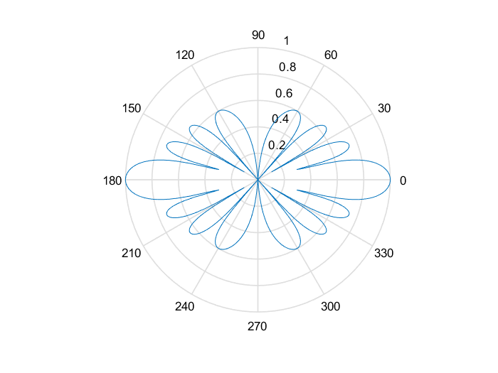

clear all; % effacement de toutes les variables de l’espace travail close all; % fermeture de tous les fichiers (éventuellement) ouverts global NOMBRE_ANTENNES; % nombre total de capteurs de l’antenne global BINARY_DATA_RATE; % débit de la source binaire transmise global FACTEUR_SURECH; % facteur de sur-échantillonnage au récepteur global ROLL_OFF_FACTOR; % facteur de retombée des filtres en cosinus sur-élévé global SAMPLING_FREQ; % fréquence d’échantillonage du signal au récepteur global BAUD_RATE; % rapidité de modulation des données transmises %============================================================================= % 1- Exemple d’initialisation des ces paramètres %============================================================================= ROLL_OFF_FACTOR=0.3; NOMBRE_ANTENNES=10; FACTEUR_SURECH=2; BANDWIDTH=200e3; DUREE_SYMBOLE=1/BANDWIDTH; BAUD_RATE=1/DUREE_SYMBOLE; SAMPLING_FREQ=FACTEUR_SURECH*BAUD_RATE; d_sur_lambda = [.125 .25 .5]; M = 16; % Théoriquement, en programmant la formule (2.8) du poly. Faire l'analyse sous % Matlab du diagramme de l'antenne élémentaire comme indiqué sur le poly (exercice 2.2). % Le tracer en linéaire (le module de C au carré exprimé en dB en fonc1on de Phi) puis en % coordonnées polaire (avec le programme TracePolar.m en exécutant TracePolar(Phi, abs(C), -50) % où Phi est un vecteur d'angles, et où C est un vecteur stockant la réponse de % l'antenne obtenue pour ces angles. %toujours un vecteur c'est un vecteur colonne nombre_points = 300; phi = linspace(-pi/2,pi/2,nombre_points); v = zeros(M,1);% M_const = 1/M^0.5; w = ones(16,1)*M_const; for j = 1:3 for i = 1:size(phi,2) for m = 1:size(v,1) v(m) = M_const*exp(-1i*2*pi*d_sur_lambda(j)*(m-1)*sin(phi(i))); end C(i) = w'*v; end C = abs(C).^2; figure(); grid on plot(phi,(C)); figure(); TracePolar(phi,(C), -50); end %============================================================================= % 2- Génération des signaux sur l’ensemble des capteurs %============================================================================= % % Expérimentalement (exercice 2.3). U1liser le programme GeneSignaux.m (cf. gure ci-dessous) % pour obtenir les signaux sur les NOMBRE_ANTENNES antennes élémentaires au sein % de la matrice dénommée Sig Phis = 0; %20*pi/180; % dangle d’incidence du signal utile Phi1 = -30*pi/180 % angle d’incidence du premier interférent Phi2 = 60*pi/180 % angale d’incidence du second interférent RSB = 15; % rapport de puissance (en dB) entre le signal utile % et le bruit au niveau de chaque capteur RSI1 = 2 % rapport de puissance (en dB) entre le signal utile et l’interférent n?1 RSI2 = 3 % rapport de puissance (en dB) entre le signal utile et l’interférent n?2 [MatriceR,Sig,BinaireIn,PenteSCurve] = GeneSignaux(Phis,Phi1,Phi2,RSB,RSI1,RSI2);
Phi1 =
-0.5236
Phi2 =
1.0472
RSI1 =
2
RSI2 =
3
nbsymb =
25000
ans =
25000 1
ans =
50000 1
PenteSCurve =
-2.4913
ans =
1
1
1
1
1
1
1
1
1
1
ans =
50000 1
